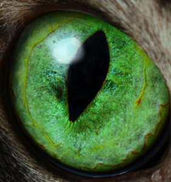

<?xml version="1.0" encoding="UTF-8"?>
<rss version="2.0"
	xmlns:content="http://purl.org/rss/1.0/modules/content/"
	xmlns:wfw="http://wellformedweb.org/CommentAPI/"
	xmlns:dc="http://purl.org/dc/elements/1.1/"
	xmlns:atom="http://www.w3.org/2005/Atom"
	xmlns:sy="http://purl.org/rss/1.0/modules/syndication/"
	xmlns:slash="http://purl.org/rss/1.0/modules/slash/"
	>

<channel>
	<title>The Civilization Gene &#187; science</title>
	<atom:link href="http://civgene.matthewnewhall.com/archives/category/society/science/feed" rel="self" type="application/rss+xml" />
	<link>http://civgene.matthewnewhall.com</link>
	<description>Civilization is the Logic of Compassion</description>
	<lastBuildDate>Tue, 23 Jun 2015 03:44:03 +0000</lastBuildDate>
	<language>en-US</language>
	<sy:updatePeriod>hourly</sy:updatePeriod>
	<sy:updateFrequency>1</sy:updateFrequency>
	<generator>http://wordpress.org/?v=3.6.1</generator>
		<item>
		<title>Is the civilization gene just the &#8216;pack gene&#8217; plus intelligence?</title>
		<link>http://civgene.matthewnewhall.com/archives/896</link>
		<comments>http://civgene.matthewnewhall.com/archives/896#comments</comments>
		<pubDate>Mon, 08 Jun 2015 19:22:24 +0000</pubDate>
		<dc:creator>Matthew Newhall</dc:creator>
				<category><![CDATA[civilization gene]]></category>
		<category><![CDATA[currency]]></category>
		<category><![CDATA[economics]]></category>
		<category><![CDATA[EMPATHS]]></category>
		<category><![CDATA[genetics]]></category>
		<category><![CDATA[metamind]]></category>
		<category><![CDATA[pack gene]]></category>
		<category><![CDATA[PSYCHOLOGY]]></category>
		<category><![CDATA[PSYCHOPATHS]]></category>
		<category><![CDATA[science]]></category>
		<category><![CDATA[SOCIETY]]></category>
		<category><![CDATA[study]]></category>
		<category><![CDATA[subconscious]]></category>
		<category><![CDATA[sympathy]]></category>
		<category><![CDATA[trust]]></category>

		<guid isPermaLink="false">http://civgene.matthewnewhall.com/?p=896</guid>
		<description><![CDATA[With 24+ human brain related genetic changes (compared to a handful among other animals) it may be that civgene was second to last genetic change and the pack gene reactivation the final step.  It may be that the pack gene, not civgene that is recessive.  This makes sense if early man was hostile to non [&#8230;]]]></description>
				<content:encoded><![CDATA[<div class="simplesocialbuttons">
<div class="simplesocialbutton ssb-button-googleplus"><!-- Google Plus One--><div class="g-plusone" data-size="medium" data-href="http://civgene.matthewnewhall.com/archives/896"></div></div>
<div class="simplesocialbutton ssb-button-fblike"><!-- Facebook like--><div id="fb-root"></div><div class="fb-like" data-href="http://civgene.matthewnewhall.com/archives/896" data-send="false" data-layout="button_count" data-show-faces="false"></div></div>
<div class="simplesocialbutton ssb-button-twitter"><!-- Twitter--><a href="https://twitter.com/share" class="twitter-share-button" data-text="Is the civilization gene just the &#8216;pack gene&#8217; plus intelligence?" data-url="http://civgene.matthewnewhall.com/archives/896" rel="nofollow"></a></div>
</div>
<p><a href="../../../../wp-content/uploads/2015/06/macaques.jpg"></a></p>
<p>With 24+ human brain related genetic changes (compared to a handful among other animals) it may be that <a title="The original theory of civgene" href="../../../../papers/Psychopaths-ancient-breed.html">civgene</a> was second to last genetic change and the pack gene reactivation the final step.  It may be that the pack gene, not civgene that is recessive.  This makes sense if early man was hostile to non kin, making the &#8216;pack gene&#8217; a disadvantage, until the civilization gene suddenly gave those with a &#8216;pack gene&#8217; all the advantages of the conscience, making the pack gene in turn an advantage.</p>
<p><a title="http://www.hhmi.org/news/human-brain-evolution-was-special-event" href="http://www.hhmi.org/news/human-brain-evolution-was-special-event">http://www.hhmi.org/news/human-brain-evolution-was-special-event</a></p>
<p>In most other animals looking for a common behavior between two species is a strong indicator, but animals have a tall cliff of genetic change to climb to reach human intelligence levels.  When the civilization gene is found, it may yet be discovered it is switched on and off by gene held in common with other animals.  This has no behavioral implications, but might make finding the civilization gene a two part job.  Namely with the pack gene being found first.</p>
<p>Interestingly, if a human pack gene exists, and both the pack gene and civgene are recessive, it may be that lacking either one results in psychopathy.</p>
<p>Complex behaviour CAN occur from simple rules,<em> but</em>, if pack behaviour and raw intelligence alone can create conscionable behaviour, selfish game theory should demonstratively fail for most intelligent primate species.  Just make the test simple enough.   Inclusively property, freedom, and friendship (<a title="Nature is cruel, and it costs her." href="../../../../index.html%3Fp=745.html">the core conscionable behaviours</a>) need to defy strictly selfish game theory in a modelable way.  I am leaving currency, investment and civilization out because they require some intelligence as part of the model.  That may not even be strictly the case though as monkeys have demonstrated the ability to abstractly grasp currency (making markets), after being taught to use a (human invented) currency.  They are intelligent enough to use it, but have no motivation to attempt to do so.</p>
<p><iframe width="625" height="352" src="https://www.youtube.com/embed/J8449HgS3FM?feature=oembed" frameborder="0" allowfullscreen></iframe></p>
<p>Part of the civgene theory is that it overshoots past sympathy and into and irrational level of trust or empathy.  Sympathy is logical, but empathy can be very self destructive and can be illogical.  Like the battered wife who stays for life or the soldier who dies for his country.  Why is that promise(a currency) so important?  So important that humans project loving behaviours on all animals?  What other animal actively tries to protect every creature they encounter?  None.  No intelligence is needed to display this behaviour.  Yet no other animal does it.</p>
<p>Human IQ and EQ (metamind quotient) are rarely separable.  Only in the case of psychopaths where EQ is catastrophically lower if not zero.  The metamind acts like an automotive supercharger, inherently dependent on the displacement of it&#8217;s engine (IQ) to determine it&#8217;s total power.  EQ can be a productive part of the most complex and technical decision making.  You can&#8217;t separate higher intelligence from the change that made it happen.   It&#8217;s an architecture dependent feedback loop.  The same way two unique pieces of software running on duplicate hardware processing the same data can perform very differently.  Likewise for logically identical software adapted to run on different computer architectures.  Parts of the system are specialized with different compromises.  In nature a  randomly generated, environment tested, specialization in animals IS evolution.  <strong>In specialization, intelligence isn&#8217;t just smarter, it&#8217;s smarter at something.</strong>  A trade off.</p>
<p>People with a conscience aren&#8217;t just smarter, they are smarter at <a title="A human's passive long term risk engine" href="../../metamind/index.html">long term risk management</a>.  This is consistent with the specialization view of evolution.</p>
<p>In addition I think most of those those genetic mutations will turn out to be a brain platform change, possibly changing the way the entire brain works.  Effecting the entire range of behaviours of early man each time.  But even if this turns out to be bunk, we know a major platform change happened at least once.  By it&#8217;s accompanying behaviour change.  When property, friendship and freedom first appeared as civilization.  When suddenly competition took a back seat to cooperation.  Human intelligence is thought to have slowly increased over time.  <a title="Reason vs Logic" href="../../../../index.html%3Fp=578.html">If intelligence plus pack instincts defined conscience</a>, homo sapiens entire one to two hundred thousand year history would be dotted with the slowly improving remnants of failed civilizations.  Not the sudden appearance in the past ten to twenty thousand years.  Specifically, structures, and property.</p>
<p>I will revisit this question if the data changes!</p>
]]></content:encoded>
			<wfw:commentRss>http://civgene.matthewnewhall.com/archives/896/feed</wfw:commentRss>
		<slash:comments>0</slash:comments>
		</item>
		<item>
		<title>When is money just favour?</title>
		<link>http://civgene.matthewnewhall.com/archives/880</link>
		<comments>http://civgene.matthewnewhall.com/archives/880#comments</comments>
		<pubDate>Tue, 02 Jun 2015 04:52:14 +0000</pubDate>
		<dc:creator>Matthew Newhall</dc:creator>
				<category><![CDATA[capitalism]]></category>
		<category><![CDATA[civilization gene]]></category>
		<category><![CDATA[collapse]]></category>
		<category><![CDATA[conscience]]></category>
		<category><![CDATA[currency]]></category>
		<category><![CDATA[defense against psychopaths]]></category>
		<category><![CDATA[economics]]></category>
		<category><![CDATA[GOVERNMENT]]></category>
		<category><![CDATA[jealousy]]></category>
		<category><![CDATA[money]]></category>
		<category><![CDATA[property]]></category>
		<category><![CDATA[PSYCHOPATHS]]></category>
		<category><![CDATA[SOCIETY]]></category>
		<category><![CDATA[specialization]]></category>
		<category><![CDATA[trust]]></category>

		<guid isPermaLink="false">http://civgene.matthewnewhall.com/?p=880</guid>
		<description><![CDATA[Money is currency with the additional simultaneous attributes of property.  Inherent value and therefore purchasing power beyond the lone trust of either set of attributes.  An insurance policy against corruption of either.  It likely came about from attempts at corruption from psychopathic forces.  Creating a dual trap of the conscience to block animalistic regression back [&#8230;]]]></description>
				<content:encoded><![CDATA[<div class="simplesocialbuttons">
<div class="simplesocialbutton ssb-button-googleplus"><!-- Google Plus One--><div class="g-plusone" data-size="medium" data-href="http://civgene.matthewnewhall.com/archives/880"></div></div>
<div class="simplesocialbutton ssb-button-fblike"><!-- Facebook like--><div id="fb-root"></div><div class="fb-like" data-href="http://civgene.matthewnewhall.com/archives/880" data-send="false" data-layout="button_count" data-show-faces="false"></div></div>
<div class="simplesocialbutton ssb-button-twitter"><!-- Twitter--><a href="https://twitter.com/share" class="twitter-share-button" data-text="When is money just favour?" data-url="http://civgene.matthewnewhall.com/archives/880" rel="nofollow"></a></div>
</div>
<p><a href="../../../../wp-content/uploads/2015/06/cash.png"></a></p>
<p>Money is currency with the additional simultaneous attributes of property.  Inherent value and therefore purchasing power beyond the lone trust of either set of attributes.  An insurance policy against corruption of either.  It likely came about from attempts at corruption from psychopathic forces.  Creating a dual trap of the conscience to block animalistic regression back to territory or favour.  Each element protecting the other.  Money was invented to make both property and currency resistant to corruption<a title="http://civgene.matthewnewhall.com/archives/category/defense-against-a-psychopath" href="../../defense-against-a-psychopath.1.html"> from short term thinkers</a>.</p>
<p>As discussed <a title="Nature is cruel, and it costs her." href="../../../../index.html%3Fp=745.html">property and currency are derived from the conscience</a>.  This stems from our discussion of the behavioural differences between animals (and psychopaths) and conscionable human beings.  As a a result we can assert what property and currency can not be.</p>
<p>Property can not be a territory.  Currency can not be favour.  The primary difference between both is the internalized will of the conscionable human being to respect both ownership and accomplishment in the present and future without further work.  In the case of property and currency, if you add the work of defense back in the result is, territory and favour.</p>
<p>This is why debt based money is a fallacy.  It functions on the premise that any currency can be made into money simply by promising it in the future.   &#8216;Money&#8217; is created by saying the property is the promise of future human labor.  Money can never be debt because it completely undermines a conscionable construct and replaces it with it&#8217;s psychopathic social structure.  Debt based money is based on the concept that <a title="Masters and slaves" href="../../../../index.html%3Fp=74.html"> human beings, or at least their labor can be property.</a>  <a title="Reason vs Logic" href="../../../../index.html%3Fp=578.html">Unreasonable</a> on it&#8217;s face.</p>
<p>A debt based money turns property into territory.  Currency into favour.  Property and currency, which long term risk weighs as beneficial to the whole, becomes more subject to the whims of nature and man.  They are no longer the pillars of investment and economy of scale, but a transient permission to persue them.  A favour.  In a way debt-money is psychopathic commentary on the conscience itself.  The lender with a short term <a title="Jealousy: The psychopath’s conscience" href="../../../../index.html%3Fp=814.html">jealousy based risk management</a> borrows the wisdom of a holistic <a title="http://civgene.matthewnewhall.com/papers/Metamind.html" href="../../../../papers/Metamind.html">conscience long term risk management system </a>in exchange for the only thing they can give, territory and favour.  &#8216;You may continue to produce widgets to pay off your business debt.  You may continue to maintain the banks house.  You thought you were so smart about risk.  I don&#8217;t care what happened, your labor is mine.  Pay me.&#8217;</p>
<p>Systemically the reason the self contradicting nature of debt as money is not detected earlier is the competition it inspires.  During the transition from property and currency to territory and favour society can benefit from the attributes of both cooperation and competition.  Guiding and applying each to a perpetually lessening degree.</p>
<p>Eventually cooperation fails.  The mechanism is simple.  Compound interest, once introduced, demands growing competition.  Investment itself becomes no longer wise and eventually no longer possible.  Currencies and property begin to evolve outside of the system.  The debt-money loses trust, and the economies of scale, which need some degree of systemic cooperation, collapse.</p>
<p>I know of the properties that couple well with currencies now, but can&#8217;t imagine what they will be in the future.  I do know they need little defense.  I know true currency forces no hierarchy, and fiat can never be money.  I know people, and their labor can never be property.  Money was imagined to resist reversion to an animalistic society.  The day we discover the perfect money, <a title="http://civgene.matthewnewhall.com/papers/Final_Fronteer.html" href="../../../../papers/Final_Fronteer.html">will be the day we no longer need it</a>.</p>
<p>Edit 6/10/15: Added a link.</p>
]]></content:encoded>
			<wfw:commentRss>http://civgene.matthewnewhall.com/archives/880/feed</wfw:commentRss>
		<slash:comments>0</slash:comments>
		</item>
		<item>
		<title>Is civgene just apophenia?  Why don&#8217;t you run an experiment?</title>
		<link>http://civgene.matthewnewhall.com/archives/874</link>
		<comments>http://civgene.matthewnewhall.com/archives/874#comments</comments>
		<pubDate>Wed, 20 May 2015 19:04:18 +0000</pubDate>
		<dc:creator>Matthew Newhall</dc:creator>
				<category><![CDATA[civilization gene]]></category>
		<category><![CDATA[conscience]]></category>
		<category><![CDATA[defense against psychopaths]]></category>
		<category><![CDATA[economics]]></category>
		<category><![CDATA[GOVERNMENT]]></category>
		<category><![CDATA[HELPING OUT]]></category>
		<category><![CDATA[MRI]]></category>
		<category><![CDATA[PSYCHOLOGY]]></category>
		<category><![CDATA[PSYCHOPATHS]]></category>
		<category><![CDATA[science]]></category>
		<category><![CDATA[screening]]></category>
		<category><![CDATA[SOCIETY]]></category>
		<category><![CDATA[study]]></category>
		<category><![CDATA[trust]]></category>
		<category><![CDATA[Type One Civilization]]></category>

		<guid isPermaLink="false">http://civgene.matthewnewhall.com/?p=874</guid>
		<description><![CDATA[I was asked a variant of the above question, here is my response. Proof is expensive, and hard. I estimated finding the psychopathy gene would cost be about 30-50 million dollars.   Not to mention if I&#8217;m correct I&#8217;d need at least a few political favors from powerful government figures to keep it from being shut [&#8230;]]]></description>
				<content:encoded><![CDATA[<div class="simplesocialbuttons">
<div class="simplesocialbutton ssb-button-googleplus"><!-- Google Plus One--><div class="g-plusone" data-size="medium" data-href="http://civgene.matthewnewhall.com/archives/874"></div></div>
<div class="simplesocialbutton ssb-button-fblike"><!-- Facebook like--><div id="fb-root"></div><div class="fb-like" data-href="http://civgene.matthewnewhall.com/archives/874" data-send="false" data-layout="button_count" data-show-faces="false"></div></div>
<div class="simplesocialbutton ssb-button-twitter"><!-- Twitter--><a href="https://twitter.com/share" class="twitter-share-button" data-text="Is civgene just apophenia?  Why don&#8217;t you run an experiment?" data-url="http://civgene.matthewnewhall.com/archives/874" rel="nofollow"></a></div>
</div>
<p><a href="../../../../wp-content/uploads/2015/05/microscope.jpg"></a></p>
<p>I was asked a variant of the above question, here is my response.</p>
<p>Proof is expensive, and hard.</p>
<p>I estimated finding the psychopathy gene would cost be about 30-50 million dollars.   Not to mention if I&#8217;m correct I&#8217;d need at least a few political favors from powerful government figures to keep it from being shut down.  If I am correct it is certain some people &#8216;in charge&#8217; are psychopaths, know it, and don&#8217;t want to be caught.</p>
<p>Here&#8217;s the link I sent you a while back.<br />
<a title="http://civgene.matthewnewhall.com/background" href="../../../../index.html%3Fpage_id=2.html"> http://civgene.matthewnewhall.com/background</a></p>
<p>Which includes the following.<br />
<a title="http://civgene.matthewnewhall.com/papers/Psychopaths-genetic-screening.html" href="../../../../papers/Psychopaths-genetic-screening.html"> http://civgene.matthewnewhall.com/papers/Psychopaths-genetic-screening.html</a></p>
<p>That&#8217;s where the 30-50 million comes from.  Proof may well cost 100 million dollars.  That&#8217;s why.  If a study is funded, I&#8217;ll help anyway I can.  Of course I&#8217;d love to hear flaws in how such a study might work versus my suggestions.</p>
<p>I could be wrong, but I doubt it&#8217;s <a title="http://en.wikipedia.org/wiki/Apophenia" href="http://en.wikipedia.org/wiki/Apophenia">apophenia</a>.   But here&#8217;s how to convince me it might be.  Use logic or good data to disprove one of these axioms.  I&#8217;ll be happy to elaborate more on the &#8216;weak spot.&#8217;</p>
<ol>
<li>Copernicus observed and theorized.  Adam Smith observed and theorized.  Darwin observed and theorized.  Observation and positing theories is how new science is done.  It just happens in this case I didn&#8217;t need a huge grant from the NIH simply make the observations.  The details were hidden in plain sight.  Now I would like one to prove the theory they provide.  I noticed them partly because I have such a strange group of perspectives and interests.</li>
<li>All people have some &#8216;good&#8217; in them is incorrect.  Some (not all) people will never revert to behavior that is a mean benifit to humanity.  This is based on Hare&#8217;s psychopath work.   BTW his work is used to parole (or not parole) convicts.  Ignoring this science not only refutes the science he helped create but is passing a blind eye to real peoples hurt (no parole) resulting from the bad science.  Our perception that they need &#8216;one more chance&#8217; is a projection of who we are onto them.  (this last point is illustrative)</li>
<li>Hare&#8217;s work, specifically the psychopathy checklist has endured not only scientific peer review, but judicial review in multiple countries.</li>
<li>Psychopaths display no behaviors that can&#8217;t be found in the body of mentally healthy adult humans.  The reverse is not true.  Most humans display regular symptoms of a conscience (perhaps with periodic omissions or exceptions in the form of psychopathic behavior), psychopaths never do.</li>
<li>People are out to get you, but they are not working together.  To me this draws the line between authentic apophenia/paranoia and reasonable caution.  There is an argument against this, but interestingly you need to assume at least part of civgene is true to make it.  As another illustrative point, I have had some success with speculation on science trends in the past (open source.)</li>
<li>Game theory or selfish logic, fails in the real world.  Most people help each other, at least sometimes, even when there is no benefit.</li>
<li>Economic explanations of the foundation of civilization are muddy, overly complex and incoherent.   Archaeological remnants of civilization appear suddenly indicating a rapid change in behavior with technologies at their onset.</li>
<li>Many facts about psychopathy are brand new.  There was no coherent definition of it until the 1970s.  So it&#8217;s the right time for these ideas.  Modern science of psychopathy couldn&#8217;t have happened without microcomputers, a pre-requisite for the MRI, a prerequisite for some repeatable experiments.  So&#8230; the earliest it could have happened was the 1970s.</li>
<li>Psychopaths know they are different.  A psychopath knows they function and operate differently than the people around them, even if they don&#8217;t know they are a psychopath.  Psychopaths are relatively indifferent about lying and are highly competitive so they are VERY unlikely to admit they are sick or strange unless they think it provides them a competitive advantage somehow.  All these facts come directly from Hare&#8217;s work.  They are critical to crafting the psychopathy checklist.</li>
</ol>
<p>These are key points that formed civgene.  Since then I&#8217;ve been just using the new lens to bring events into focus.</p>
<p>Because some of the most powerful stand to loose their most prized possessions (money, power) if civgene is proven, it&#8217;s important to proceed to remediation of the damage without the proof.  I lay this out in the type on civilization paper.<br />
<a title="http://civgene.matthewnewhall.com/papers/Type-one.html" href="../../../../papers/Type-one.html">http://civgene.matthewnewhall.com/papers/Type-one.html</a></p>
<p>That&#8217;s why I didn&#8217;t just stop at civgene.  No they can&#8217;t trust each other or work together, but many callous people have a common interest.  To prevent civgene from being fact.</p>
<p>BTW I also have a paper on how to falsify civgene specific theories.<br />
<a title="http://www.civgene.matthewnewhall.com/papers/Civgene-falsifiability.html" href="http://www.civgene.matthewnewhall.com/papers/Civgene-falsifiability.html">http://www.civgene.matthewnewhall.com/papers/Civgene-falsifiability.html</a></p>
<p>And why I think this fell on me.<br />
<a title="http://civgene.matthewnewhall.com/archives/723" href="../../../../index.html%3Fp=723.html">http://civgene.matthewnewhall.com/archives/723</a></p>
<p>You may disagree, and I may be a nut, but that doesn&#8217;t prove I am wrong either.  Thank you for your points.</p>
]]></content:encoded>
			<wfw:commentRss>http://civgene.matthewnewhall.com/archives/874/feed</wfw:commentRss>
		<slash:comments>0</slash:comments>
		</item>
		<item>
		<title>Jealousy: The psychopath&#8217;s conscience</title>
		<link>http://civgene.matthewnewhall.com/archives/814</link>
		<comments>http://civgene.matthewnewhall.com/archives/814#comments</comments>
		<pubDate>Thu, 12 Mar 2015 16:40:52 +0000</pubDate>
		<dc:creator>Matthew Newhall</dc:creator>
				<category><![CDATA[ASPD]]></category>
		<category><![CDATA[capitalism]]></category>
		<category><![CDATA[civilization gene]]></category>
		<category><![CDATA[collapse]]></category>
		<category><![CDATA[compound emotions]]></category>
		<category><![CDATA[conscience]]></category>
		<category><![CDATA[counter-culture]]></category>
		<category><![CDATA[defense against a psychopath]]></category>
		<category><![CDATA[defense against psychopaths]]></category>
		<category><![CDATA[economics]]></category>
		<category><![CDATA[EMPATHS]]></category>
		<category><![CDATA[GOVERNMENT]]></category>
		<category><![CDATA[investment]]></category>
		<category><![CDATA[jealousy]]></category>
		<category><![CDATA[logic]]></category>
		<category><![CDATA[masters and slaves]]></category>
		<category><![CDATA[metamind]]></category>
		<category><![CDATA[reason]]></category>
		<category><![CDATA[SOCIETY]]></category>
		<category><![CDATA[sociopath]]></category>
		<category><![CDATA[specialization]]></category>
		<category><![CDATA[subconscious]]></category>

		<guid isPermaLink="false">http://civgene.matthewnewhall.com/?p=814</guid>
		<description><![CDATA[Civgene indicates the narcissism, ASPD and sociopath labels as a logical progression similar to id, ego and superego.  This led later to the metamind model, as a way to understand the subconscious and empathy as attributes of empathic or non-psychopath humans.  We&#8217;ve discussed emotional primitives of bliss, despair, and will to action as the building [&#8230;]]]></description>
				<content:encoded><![CDATA[<div class="simplesocialbuttons">
<div class="simplesocialbutton ssb-button-googleplus"><!-- Google Plus One--><div class="g-plusone" data-size="medium" data-href="http://civgene.matthewnewhall.com/archives/814"></div></div>
<div class="simplesocialbutton ssb-button-fblike"><!-- Facebook like--><div id="fb-root"></div><div class="fb-like" data-href="http://civgene.matthewnewhall.com/archives/814" data-send="false" data-layout="button_count" data-show-faces="false"></div></div>
<div class="simplesocialbutton ssb-button-twitter"><!-- Twitter--><a href="https://twitter.com/share" class="twitter-share-button" data-text="Jealousy: The psychopath&#8217;s conscience" data-url="http://civgene.matthewnewhall.com/archives/814" rel="nofollow"></a></div>
</div>
<p style="text-align: center;"><a href="../../../../wp-content/uploads/2015/03/Risk2.png"></a></p>
<p>Civgene indicates the narcissism, ASPD and sociopath labels as a logical progression similar to id, ego and superego.  This led later to the metamind model, as a way to understand the subconscious and empathy as attributes of empathic or non-psychopath humans.  We&#8217;ve discussed emotional primitives of bliss, despair, and will to action as the building blocks of complex emotions responsible for imagination as the underpinning of empathy.  Also we&#8217;ve considered the psychopaths ability to love, and it&#8217;s limitation to a subtle compulsion to help immediate family such as other mammals display.</p>
<p>With the previous ideas front and center a new consideration emerges.  Animals display jealousy.  Anyone with more than one pet has seen the green eyed monster emerge, over toys, food, attention.  Animals want each others territory and favour.  They seem so knowing, so human, when they are jealous.</p>
<p>It could be perceived that jealousy is proof that animals display complex emotions.  Namely emotional reactions that involve more than one primitive emotion at once.  The behavior that results can be intricate, but this is not evidence of emotional complexity.  Jealousy occurs when a strong bliss, dispair, and then will to action reaction happen at the same time.  The difference is empathic humans can be jealous as an act of imagination in any time and place, imagination being that passive relational database that is the conscience.  Animals and psychopaths react to the now.</p>
<p>What triggers all three primitives?  It seems to begin with witnessing external bliss.  Bliss seems to create a sympathetic reaction in all animals interested in the same territory or favour as another.  One animal senses (sees,hears,smells,etc) another enjoying something and bliss is triggered within them as well.  Without the access the other animal has, the bliss activates despair.  Despair is simple helplessness.  Once despair has reached sufficient depths, will to action is called.  Will to action then drives a vast array of actions based on the available rational thought.  Rational thought that may be impaired by the strong emotion.</p>
<p>This progression bliss -&gt; despair -&gt; will is ubiquitous.  The desire to &#8216;steal&#8217; what empaths may deem property or currency or interfere in a friendship is occurring at their LEAST rational state.  Emotions and the chemical signals they employ have taken over the brain.  There is no choice in the process, most importantly there is less or no rational thought.  Jealousy is the animal kingdoms more primitive risk management system.  The jealousy risk engine is the predecessor to the conscience.  Serving a vital role.  Making sure that learned behaviors during periods of calm don&#8217;t dictate actions at the moments of highest risk.  Namely one animal taking another&#8217;s territory or favour.  It&#8217;s a simple trick to snap an animal out of a more common pattern and stand up for it&#8217;s self.</p>
<p>A psychopath who has progressed to a sociopath rationally recognizes this risk.  He or she will work to avoid situations that provoke jealousy.  Partly by limiting social access themselves to those who will accept their assignments without challenge, and partly by becoming materially successful beyond practical needs.  They become wildly rich to avoid the green eyed monster.<br />
It&#8217;s a good strategy when social interactions are infrequent or small, but inferior to our risk engine, the conscience.  Jealousy breaks down as complexity increases.  Civilization and it&#8217;s enabler the conscience creates the invention and surplus needed to concentrate great wealth and power in psychopath hands, but the psychopaths must face other psychopaths with similar wealth.  Instances of jealousy can not be eliminated inside a human civilization.</p>
<p>The flaws in managing risk through jealousy are two fold.</p>
<ul>
<li>Centralized power pushes out investment.  While invention creates surplus, power saps it.  Invention will always occur from empath humans but as a power structure becomes more pervasive, more invention simply occurs outside it.  Currency systems form as a way to capitalize on the external investment, and new power is formed outside the old scope.  This can be at any scope from a family farm to competing superpowers.  Currency (including money) goes to where it is treated best.</li>
<li>Any environment from a town to a planet has natural boundaries.  Since there will always be opportunities to create jealousy a sociopath will assert their dominance until they are stopped by force or exhaust all resources.  While they can limit the frequency of jealous experiences, it is a fantasy from a primitive time that they can prevent them.</li>
</ul>
<p>&nbsp;</p>
<p>Notice that both of these risks are long term.  Hence the idea the civilization gene, the mutation of the metamind, is a superior engine of long term risk management.</p>
<p>Sociopath stage psychopaths can reliably be identified by their desire for wealth and power.  We must avoid the exhaustion of global resources, not by further centralizing their power, but by focusing our power of invention at a local scope.  A psychopath will see external currencies as risk as per their tool jealousy, but they have a major disability when weighing risk to property, currency and the autonomy they enable.  Currency and property of any type is derived from the conscience itself.  Shun false &#8216;leaders&#8217; that want power over local currencies.  Not just currencies we trade for goods and services, but anything that defines our skills, experience and identity.  Not out of jealousy of their wealth, but as rejection of their inability to even discern, much less serve, humanities interests.</p>
]]></content:encoded>
			<wfw:commentRss>http://civgene.matthewnewhall.com/archives/814/feed</wfw:commentRss>
		<slash:comments>2</slash:comments>
		</item>
		<item>
		<title>Why communism failed</title>
		<link>http://civgene.matthewnewhall.com/archives/782</link>
		<comments>http://civgene.matthewnewhall.com/archives/782#comments</comments>
		<pubDate>Fri, 20 Feb 2015 19:29:58 +0000</pubDate>
		<dc:creator>Matthew Newhall</dc:creator>
				<category><![CDATA[capitalism]]></category>
		<category><![CDATA[civilization gene]]></category>
		<category><![CDATA[collapse]]></category>
		<category><![CDATA[communism]]></category>
		<category><![CDATA[defense against psychopaths]]></category>
		<category><![CDATA[economics]]></category>
		<category><![CDATA[EMPATHS]]></category>
		<category><![CDATA[GOVERNMENT]]></category>
		<category><![CDATA[know yourself]]></category>
		<category><![CDATA[masters and slaves]]></category>
		<category><![CDATA[PSYCHOLOGY]]></category>
		<category><![CDATA[republic]]></category>
		<category><![CDATA[SOCIETY]]></category>
		<category><![CDATA[trust]]></category>

		<guid isPermaLink="false">http://civgene.matthewnewhall.com/?p=782</guid>
		<description><![CDATA[Communists and some socialists argue communism failed because of the implementation.  That the many intricacies it&#8217;s authors put forth were not appreciated.  They will point to both it&#8217;s observations about inequality and successful predictions about social change.  This last point is important.  Many of Marx&#8217;s (for example) observations where in general correct, but I assert [&#8230;]]]></description>
				<content:encoded><![CDATA[<div class="simplesocialbuttons">
<div class="simplesocialbutton ssb-button-googleplus"><!-- Google Plus One--><div class="g-plusone" data-size="medium" data-href="http://civgene.matthewnewhall.com/archives/782"></div></div>
<div class="simplesocialbutton ssb-button-fblike"><!-- Facebook like--><div id="fb-root"></div><div class="fb-like" data-href="http://civgene.matthewnewhall.com/archives/782" data-send="false" data-layout="button_count" data-show-faces="false"></div></div>
<div class="simplesocialbutton ssb-button-twitter"><!-- Twitter--><a href="https://twitter.com/share" class="twitter-share-button" data-text="Why communism failed" data-url="http://civgene.matthewnewhall.com/archives/782" rel="nofollow"></a></div>
</div>
<p><a href="../../../../wp-content/uploads/2015/02/nietzsche-marx-freud.jpg"></a></p>
<p>Communists and some socialists argue communism failed because of the implementation.  That the many intricacies it&#8217;s authors put forth were not appreciated.  They will point to both it&#8217;s observations about inequality and successful predictions about social change.  This last point is important.  Many of Marx&#8217;s (for example) observations where in general correct, but I assert he did not know why.  He couldn&#8217;t have.  It wouldn&#8217;t be understood for another 100 years.</p>
<p>The same trap ensnared Marx, Engels, earlier Soviets, Mao Zedong and many others.  The presumption that humanity could be described as one broad set of human behaviours.   A second human population, identical in appearance and random in placement was at work, and playing by very different rules.  Game theory, a model of perfect selfish logic.</p>
<p>Both property and freedom derive directly from how the conscience operates.  The conscience in turn is what <a title="Nature is cruel, and it costs her." href="../../../../index.html%3Fp=745.html">separates civilization from the animals</a>.  These conceptual primitives are the basic proxies of trust, which is necessary for investment, in turn specialization, and then in turn for economy of scale.  If you don&#8217;t know economy of scale is the single most important economic force on earth.  The force of efficiency through experience, only possible because risk of waste is lowered though the paranoid kindness of civilized humanity.  Perhaps Marx did not understand that this, not the accumulation of wealth and power is what attracted the whole of humanity to industrialization.  He took a partial view of Adam Smith&#8217;s affection for capital as the most significant force in capitalist economics.  Capitalism is about currency, but that currency is derived from property which is a mutually understood provision of autonomy.  Autonomy being the fundamental right of a being to pursue survival.</p>
<p>This is not just another dismissal of Engels and Marx&#8217;s ideas, or more specifically not of their observations.  They observed industry leaders accumulating strange amounts of capital.  Capital that was then used to then enslave the poor and diminish the importance of the bourgeoisie or middle class.  They saw the rich becoming much richer.  They noticed that capitalism leaned toward the centralized controls of oligarchy.  They noticed the tendency of to drive wages to the bare substance living, equating it to slavery.  They posited that the societal destructive forces would eventually collapse the social order and subsequently cause an economic collapse.  That people would fold their arms or take up arms and factories and governments would fail alike.  Ultimately they noticed that capitalism seems to promote short sighted selfish behaviour and when the people rejected that behaviour they would form a new order.</p>
<p>Many people have been taken by the validity and verifiability of these claims.  Many were real demonstrable claims as displayed in their home country of Germany.   It would soon face the second and third generations of revolution, war strife and economic collapse that every nation eventually must grapple with.  Their time was the time of Nietzsche and his dark views.  A time where Freud and Jung in neighbouring Austria and Switzerland were desperately trying to understand why people acted in the insane manner in which they did.  He came after a period of hundreds of years of relative economic prosperity that set Germany up for it&#8217;s eventual fall.  How could a system that formalized greed and exploitation be accepted such as this?</p>
<p>What no one realized or likely could have realized at the time was that the underlying makeup of the populous had changed.  During the hundreds of years of internally growing prosperity, psychopaths were breeding faster than non psychopaths were.  They had likely grown from some fraction of a percent to several percent.  Likewise attracted to power and wealth they had assumed higher and higher positions in both government and industry.  Germany, along with it&#8217;s region had begun a tri-generational social and economic collapse.  Psychopaths accumulate wealth and power to shield themselves from social interaction.  Psychopaths view the world in a binary master/slave model as to ease the same awkward risk, cutting down or kneeling before everyone they meet.  Psychopaths had all but completely overtaken the communal benefits of economy of scale to line their own halls and pockets and the society was crumbling around them for it.</p>
<p>Starting in the revolution, and finally complete with Germany&#8217;s forces surrendering to the allies, the psychopaths population had finally been reduced down enough that empathic (non psychopath) humans could near spontaneously generate uncorrupted economies of scale once again.  They had been culled by their own lack of cooperation.  Their inability to blend in to the small self organizing groups that sprung up in the absence of a betrayed central trust doomed them to eventual exile and death.  Not immediately, but over three, long, murderous generations.</p>
<p>Marx was right.  Capitalism was failing, but in error he pointed to the wrong reasons why.  He did not recognize the two separate sets of behaviour, the emapths with their emergent properties as Adam Smith observed, and the game theory selfish logic of the newly prevalent psychopaths.  The capitalist system had been manned, especially at the top by a new people with new rules.  Ones that would lie cheat and steal, at will, to the end of maintaining their own personal veil of normalcy.  Corruption of the trust both implemented and implied by the system.</p>
<p>I was inspired to discuss this by the accusation that <a title="http://civgene.matthewnewhall.com/papers/Psychopaths-ancient-breed.html" href="../../../../papers/Psychopaths-ancient-breed.html">the civilization gene</a> is &#8216;Cultural Marxist crap.&#8217;  No, but I can see how someone would think this for the same reasons that someone comes to believe that communism is a valid social strategy.  Marx and Engels correct observations.   The accusation couldn&#8217;t  be further from the truth.  Civgene validates Adam Smith and capitalism, when it is undertaken by those with a conscience and it&#8217;s inherent attributes property and freedom.  The metamind is undoubtedly guiding the invisible hand, avoiding rationally indiscernible risks.  Meanwhile civgene demonstrates what nature has already demonstrated before.  That the social attributes property and freedom closest work alikes, territory and treaty, only end in a master/slave dichotomy with the end of centralized power as a cheap substitute for trust inspired investment.  Marx, Engels, Nietzsche, Freud, and Jung&#8217;s surroundings were distorted.  A madhouse an inch from collapse.  A society collapsing under the weight of it&#8217;s psychopaths and their graft, and their desperate corruption.</p>
]]></content:encoded>
			<wfw:commentRss>http://civgene.matthewnewhall.com/archives/782/feed</wfw:commentRss>
		<slash:comments>0</slash:comments>
		</item>
		<item>
		<title>Animal Odd couples</title>
		<link>http://civgene.matthewnewhall.com/archives/776</link>
		<comments>http://civgene.matthewnewhall.com/archives/776#comments</comments>
		<pubDate>Fri, 13 Feb 2015 06:06:09 +0000</pubDate>
		<dc:creator>Matthew Newhall</dc:creator>
				<category><![CDATA[EMPATHS]]></category>
		<category><![CDATA[science]]></category>
		<category><![CDATA[SOCIETY]]></category>
		<category><![CDATA[sponsored sociopathy]]></category>
		<category><![CDATA[trust]]></category>

		<guid isPermaLink="false">http://civgene.matthewnewhall.com/?p=776</guid>
		<description><![CDATA[Interesting video from PBS, circa 2012.    Inter species relationships.  Watching the animals care for each other seems hauntingly compassionate.   Perhaps perceptively contradictory to the nature of psychopaths. In this episode the relationships all have something in common.  The relationships between animals are initiated and subsidized by empathic humans.  Perhaps there are clues within cross species [&#8230;]]]></description>
				<content:encoded><![CDATA[<div class="simplesocialbuttons">
<div class="simplesocialbutton ssb-button-googleplus"><!-- Google Plus One--><div class="g-plusone" data-size="medium" data-href="http://civgene.matthewnewhall.com/archives/776"></div></div>
<div class="simplesocialbutton ssb-button-fblike"><!-- Facebook like--><div id="fb-root"></div><div class="fb-like" data-href="http://civgene.matthewnewhall.com/archives/776" data-send="false" data-layout="button_count" data-show-faces="false"></div></div>
<div class="simplesocialbutton ssb-button-twitter"><!-- Twitter--><a href="https://twitter.com/share" class="twitter-share-button" data-text="Animal Odd couples" data-url="http://civgene.matthewnewhall.com/archives/776" rel="nofollow"></a></div>
</div>
<p><a href="../../../../wp-content/uploads/2015/02/pair.jpg"></a></p>
<p>Interesting video from PBS, circa 2012.    Inter species relationships.  Watching the animals care for each other seems hauntingly compassionate.   Perhaps perceptively contradictory to the nature of psychopaths.</p>
<p>In this episode the relationships all have something in common.  The relationships between animals are initiated and subsidized by empathic humans.  Perhaps there are clues within cross species partnerships to better relationships between emaths and psychopaths, for both parties.   You might want to look at the <a title="Sponsored sociopathy" href="../../../../index.html%3Fp=615.html">sponsored sociopathy post</a> for a human specific analysis.</p>
<p><a href="http://video.pbs.org/video/2300668052/">http://video.pbs.org/video/2300668052/</a></p>
]]></content:encoded>
			<wfw:commentRss>http://civgene.matthewnewhall.com/archives/776/feed</wfw:commentRss>
		<slash:comments>0</slash:comments>
		</item>
		<item>
		<title>Nature is cruel, and it costs her.</title>
		<link>http://civgene.matthewnewhall.com/archives/745</link>
		<comments>http://civgene.matthewnewhall.com/archives/745#comments</comments>
		<pubDate>Thu, 05 Feb 2015 18:19:20 +0000</pubDate>
		<dc:creator>Matthew Newhall</dc:creator>
				<category><![CDATA[civilization gene]]></category>
		<category><![CDATA[conscience]]></category>
		<category><![CDATA[currency]]></category>
		<category><![CDATA[economics]]></category>
		<category><![CDATA[EMPATHS]]></category>
		<category><![CDATA[faith]]></category>
		<category><![CDATA[investment]]></category>
		<category><![CDATA[logic]]></category>
		<category><![CDATA[metamind]]></category>
		<category><![CDATA[money]]></category>
		<category><![CDATA[property]]></category>
		<category><![CDATA[PSYCHOPATHS]]></category>
		<category><![CDATA[reason]]></category>
		<category><![CDATA[science]]></category>
		<category><![CDATA[specialization]]></category>
		<category><![CDATA[subconscious]]></category>
		<category><![CDATA[trust]]></category>

		<guid isPermaLink="false">http://civgene.matthewnewhall.com/?p=745</guid>
		<description><![CDATA[Nature is a series of random genetic accidents with winners and losers.  That is evolution.  The observed evidence is insurmountable.  I can not discount that evolution could be incorrect, but it is the most viable explanation at this time.  It stands out in a way that describes other views not as theory but as faith. [&#8230;]]]></description>
				<content:encoded><![CDATA[<div class="simplesocialbuttons">
<div class="simplesocialbutton ssb-button-googleplus"><!-- Google Plus One--><div class="g-plusone" data-size="medium" data-href="http://civgene.matthewnewhall.com/archives/745"></div></div>
<div class="simplesocialbutton ssb-button-fblike"><!-- Facebook like--><div id="fb-root"></div><div class="fb-like" data-href="http://civgene.matthewnewhall.com/archives/745" data-send="false" data-layout="button_count" data-show-faces="false"></div></div>
<div class="simplesocialbutton ssb-button-twitter"><!-- Twitter--><a href="https://twitter.com/share" class="twitter-share-button" data-text="Nature is cruel, and it costs her." data-url="http://civgene.matthewnewhall.com/archives/745" rel="nofollow"></a></div>
</div>
<p style="text-align: center;"><a href="../../../../wp-content/uploads/2015/02/Darwin.jpg"></a></p>
<p>Nature is a series of random genetic accidents with winners and losers.  That is evolution.  The observed evidence is insurmountable.  I can not discount that evolution could be incorrect, but it is the most viable explanation at this time.  It stands out in a way that describes other views not as theory but as faith.</p>
<p>Faith as critical to the human condition.  Faith is how the conscious mind receives and considers messages from the subconscious one.  Those messages not only comprise your ability to integrate into civilization, but protect you as long term risk management.  Together rational, logical thought, and messages of faith from the conscience form reason.</p>
<p>Reason&#8217;s initial advantage to pure logic is speed.  We can quickly asses risks in ways we can not on a purely factual basis.  Logic is complex as the facts are many.  As computer simulation demonstrates, eventually too complex to calculate.  We have a flawed but mostly effective method to quickly get the same results.  The conscience is a probability engine.  It is characterized by cooperation, at a level I do not observe the effects of in nature.  Systems of cooperation emerge between species, but by the same random genetic events that characterize all of nature.</p>
<p>Here are some examples of cooperation I do not see elsewhere in nature.  For contrast I compare their closest analogy .  Not coincidentally the closest simulation of the conscionable behavior a psychopath can offer.  It is important to note these do not require intelligence, just subconscious awareness of risk based on experience, and the rational ability to acknowledge the warnings.  All conscionable elements extend beyond kin or pack structure.</p>
<p><span style="color: #008000;"><strong>Property</strong> &#8211; Identity of an place, item, or accomplishment belonging to a being or a group.  Honoured and understood as a provision of autonomy to a distant time.</span><br />
<span style="color: #800000;"><strong>Territory</strong> &#8211; Control of a place, item, or role by a being or group.  Enforced by violence.  Revoked by absence.</span></p>
<p><span style="color: #008000;"><strong>Freedom</strong> &#8211; A cooperative model of non interference.  The promise of non interference in exchange for a return of the same.</span><br />
<span style="color: #800000;"><strong>Treaty</strong> &#8211; A stalemate, a mutual temporary cessation of conflict to avoid over exertion.</span></p>
<p><span style="color: #008000;"><strong>Friendship</strong> &#8211; The expectation of continued freedom between parties despite periodic violation of it.</span><br />
<span style="color: #800000;"><strong>Alliance</strong> &#8211; A temporary teamwork towards and depending on a common goal.</span></p>
<p><span style="color: #008000;"><strong>Currency</strong> &#8211; A convenient object or idea representing and interchangeable with other property.  A promise of property.  </span><br />
<strong> <span style="color: #800000;">F</span></strong><span style="color: #800000;"><strong>avour</strong> &#8211; A treaty, a yield of territory to display deference to hierarchy.</span></p>
<p><span style="color: #008000;"><strong>Investment</strong> &#8211; Dedication of time and calories into a being&#8217;s or a groups creative development.  Requires property and currency to realize return.</span><br />
<span style="color: #800000;"><strong>Assignment </strong>- Dedication of time and calories into another&#8217;s territory with the expectation of favour.</span></p>
<p><span style="color: #008000;"><strong>Civilization</strong> &#8211; An organization including property, freedom, friendship,  and currency.  Characterized by trust.  Allowing investment (farming, storage, trade), subsequently specialization, and it&#8217;s side effect economy of scale.</span><br />
<span style="color: #800000;"><strong>Pack</strong> -  An organization based on territory, treaty, alliance, and favour.  Structured by assignment of roles.  Transient.</span></p>
<p>Civilization may look intelligent, but it need not be.  The concepts are simple.  No more or less formulaic than pack structure.  Other animals may demonstrate fleeting glimpses of the aspects of civilization, but there is a cost in energy they are not interested in paying.  Why?  Because they can&#8217;t calculate the risk.  If they could, choice is clear.</p>
<p>In case you didn&#8217;t notice I included only the most simple tools.  There are  plenty of cases in nature where animals farm, store or even trade.  Many animals (not just primates) use tools.  The components are there, but the conscience is not.</p>
<p>There are animals that outstrip humans in vision, memory, hearing.  Not intelligence, but they can come very close.  Especially when considering our worst mean cases and their best.  That should be sufficient in isolation to create a civilization, but it doesn&#8217;t.  This is meaningful.  Intelligence may be important to a civilization, but is not the only component.</p>
<p>The definitions have a common attribute.  All of the conscionable cases have a future time component to them, while all of the pack ones only consider now.  I strongly suspect this is related to how the conscience works.  It seems the case that humans are alone in their ability to use emotional metadata, to dial groups of memories backward or forward in time without habit.  The very thing that makes us kind, makes us smart, as a group.  Humans can use how they feel to reference their entire memorable history for clues how to survive.  The very fortunate side effect of organizing by emotional memory for assessing risk, is the compassion needed to work in a group.  To build more than a pack, but a whole civilization.</p>
<p>We struggle with our role because it is a dualism.  We are psychopaths at the rational level.  In this way we are the children of nature, and our ability see future risk makes us it&#8217;s master as well.</p>
<p>Edit: Added investment.  Minor change to currency.</p>
<p>Edit 2: Changed &#8216;Invention&#8217; to &#8216;creative development.&#8217;  Both words are needed for the right concept here.   Both work and invention, where the sum is greater than the parts.  Some spelling errors.  Included accomplishment or role as a property.</p>
]]></content:encoded>
			<wfw:commentRss>http://civgene.matthewnewhall.com/archives/745/feed</wfw:commentRss>
		<slash:comments>5</slash:comments>
		</item>
		<item>
		<title>New paper &#8211; Falsifiability of civgene</title>
		<link>http://civgene.matthewnewhall.com/archives/736</link>
		<comments>http://civgene.matthewnewhall.com/archives/736#comments</comments>
		<pubDate>Wed, 21 Jan 2015 07:20:33 +0000</pubDate>
		<dc:creator>Matthew Newhall</dc:creator>
				<category><![CDATA[civilization gene]]></category>
		<category><![CDATA[collapse]]></category>
		<category><![CDATA[economics]]></category>
		<category><![CDATA[PSYCHOPATHS]]></category>
		<category><![CDATA[science]]></category>
		<category><![CDATA[screening]]></category>
		<category><![CDATA[SOCIETY]]></category>
		<category><![CDATA[study]]></category>

		<guid isPermaLink="false">http://civgene.matthewnewhall.com/?p=736</guid>
		<description><![CDATA[Put together a draft of the falsifiability of different genetic civgene theories.   Take a look.  It should prove useful. http://www.civgene.matthewnewhall.com/papers/Civgene-falsifiability.html]]></description>
				<content:encoded><![CDATA[<div class="simplesocialbuttons">
<div class="simplesocialbutton ssb-button-googleplus"><!-- Google Plus One--><div class="g-plusone" data-size="medium" data-href="http://civgene.matthewnewhall.com/archives/736"></div></div>
<div class="simplesocialbutton ssb-button-fblike"><!-- Facebook like--><div id="fb-root"></div><div class="fb-like" data-href="http://civgene.matthewnewhall.com/archives/736" data-send="false" data-layout="button_count" data-show-faces="false"></div></div>
<div class="simplesocialbutton ssb-button-twitter"><!-- Twitter--><a href="https://twitter.com/share" class="twitter-share-button" data-text="New paper &#8211; Falsifiability of civgene" data-url="http://civgene.matthewnewhall.com/archives/736" rel="nofollow"></a></div>
</div>
<p><a href="../../../../wp-content/uploads/2015/01/remains.jpg"></a></p>
<p>Put together a draft of the <a title="wikipedia - Falsifiability" href="http://en.wikipedia.org/wiki/Falsifiability">falsifiability</a> of different genetic civgene theories.   Take a look.  It should prove useful.</p>
<p><a title="Civgene Falsifiability" href="http://www.civgene.matthewnewhall.com/papers/Civgene-falsifiability.html">http://www.civgene.matthewnewhall.com/papers/Civgene-falsifiability.html</a></p>
]]></content:encoded>
			<wfw:commentRss>http://civgene.matthewnewhall.com/archives/736/feed</wfw:commentRss>
		<slash:comments>0</slash:comments>
		</item>
		<item>
		<title>Civgene, why now?</title>
		<link>http://civgene.matthewnewhall.com/archives/723</link>
		<comments>http://civgene.matthewnewhall.com/archives/723#comments</comments>
		<pubDate>Fri, 16 Jan 2015 21:10:55 +0000</pubDate>
		<dc:creator>Matthew Newhall</dc:creator>
				<category><![CDATA[ENTERTAINMENT]]></category>
		<category><![CDATA[forgiveness]]></category>
		<category><![CDATA[golden opportunity]]></category>
		<category><![CDATA[metamind]]></category>
		<category><![CDATA[PSYCHOLOGY]]></category>
		<category><![CDATA[reason]]></category>
		<category><![CDATA[republic]]></category>
		<category><![CDATA[study]]></category>
		<category><![CDATA[trust]]></category>

		<guid isPermaLink="false">http://civgene.matthewnewhall.com/?p=723</guid>
		<description><![CDATA[Why me? I&#8217;ve been asking myself this question since about since the civgene first dawned on me in about 2011 or so.  Most &#8216;leaders&#8217; are simply in the right place at the right time.  The person will need certain skills, but they always need to be &#8216;lucky&#8217; in the timing of their role.  I am [&#8230;]]]></description>
				<content:encoded><![CDATA[<div class="simplesocialbuttons">
<div class="simplesocialbutton ssb-button-googleplus"><!-- Google Plus One--><div class="g-plusone" data-size="medium" data-href="http://civgene.matthewnewhall.com/archives/723"></div></div>
<div class="simplesocialbutton ssb-button-fblike"><!-- Facebook like--><div id="fb-root"></div><div class="fb-like" data-href="http://civgene.matthewnewhall.com/archives/723" data-send="false" data-layout="button_count" data-show-faces="false"></div></div>
<div class="simplesocialbutton ssb-button-twitter"><!-- Twitter--><a href="https://twitter.com/share" class="twitter-share-button" data-text="Civgene, why now?" data-url="http://civgene.matthewnewhall.com/archives/723" rel="nofollow"></a></div>
</div>
<p style="text-align: center;"><a href="../../../../wp-content/uploads/2015/01/MRI.jpg"></a></p>
<p><strong>Why me?</strong></p>
<p>I&#8217;ve been asking myself this question since about since the civgene first dawned on me in about 2011 or so.  Most &#8216;leaders&#8217; are simply in the right place at the right time.  The person will need certain skills, but they always need to be &#8216;lucky&#8217; in the timing of their role.  I am no exception.  The closer I look the more I realize that everything was set up just right, and I very nearly just had to be present.  The moment of inception the tiniest breeze.  Had things been even slightly less well timed I would have noticed, and contributed, nothing.  I am merely the envoy between civilization, and it&#8217;s readiness for a new idea.</p>
<p>I have an associates degree in computer science.   My mother had a masters degree.  My wife has two!  I know I am capable of furthering my education, but never elected to.  With some irony, this may have been the key to having all the pieces I needed to discover something new in science.  A good monthly salary was my goal, when I recognized the need for intelligence and natural skill in system administration.  I was about to begin my bachelors degree, when the dot com bubble swept me into a professional role.</p>
<p>Making myself into a Linux specialist, suited the needs in three separate scientific research institutions.  This along with my non-profit Linux work gave me a broad base in both diverse computing environments and the social wonders of open source.  My wife studied psychology.  My mother studied and eventually taught business and economics after obtaining her MBA.  I was exposed to disciplines that would rarely or never be placed together in a college environment.  I am &#8216;passionately curious&#8217; but in the past this manifested as an interest in viewing, reading and writing science fiction, not pushing the boundaries of hard science</p>
<p>Ultimately it was some rough events in my personal life that drove me to look deeper into psychopaths.  I wanted to find an angle to protect myself and others.  Hare estimates that 1-5% of population are psychopaths.  This is not small and made this the most likely part of my unlikely journey.  It was inevitable that I would have a hard run in with a psychopath.  That is everyone&#8217;s reality.</p>
<p>I&#8217;ve long since struggled with the huge leaps that economics takes to explain civilization, or money.  For years I was at a loss to explain why anyone would anyone would help Linux for free.  I&#8217;ve struggled to understand why artificial intelligence was so icy cold.  How people can trust each other in the face of thousands or even tens of thousands of risks a day, seemingly unaware, and survive.  In my desperation it all gelled together.</p>
<p>The <a title="http://civgene.matthewnewhall.com/papers/Psychopaths-ancient-breed.html" href="../../../../papers/Psychopaths-ancient-breed.html">civilization gene</a> is obvious in hindsight.  Once I knew roughly how psychopaths acted what was missing jumped out.  My logical training made me look in both directions, spotting the absence of behavior, the negative instead of the positive.  As if debugging a program.  I had a rough idea that game theory failed in the real world from my own disappointment with AI, and from science studies.  It connected to my cynicism about the foolish trust people but not animals seemed to display.  Without every piece of my background I could not have connected the clues.  The lynchpin was real world tuning of computers. Unassuming, unforgiving computers.</p>
<p>I would watch PBS as a child.  For decades shows like &#8216;Nature&#8217; were the best entertainment on the television.  Years of programming just discussing, filming and studying animal behaviour.  Monkeys, primates, any of them.  They move around.  No animal with legs or wings longer than a centimeter stays put.  They can have territories, but not properties.  Only mankind, and only at the beginning of civilization, had such a distinction.  That&#8217;s a big change.  It doesn&#8217;t just happen for no reason.</p>
<p>Psychopaths are cavemen.  Currency and investment, the cornerstones of civilization, are just huge bags of trust.  Something you can&#8217;t have without empathy.  The realization flashed into existence.  The solution to the chicken and the egg problem of economics.  Who trusted first and why.  It wasn&#8217;t a choice.  Empathy, at least at the scale only humans display, is a mutation.  The very last one most of us shared.  Everything after, as they say, is history.</p>
<p><strong>Why now?</strong></p>
<p>This is an easier question.  The easy answer is one acronym.  MRI.  And all the technologies that led up to it.  Dr. Robert Hare demonstrated a clear pattern of different brain activity between a psychopath and empath.  That would not have been possible without the MRI.</p>
<p>The same scans that helped me to recognize, combined with civgene, how the conscience actually works.  Body part and body function archetype thoughts light up the brain.  I recognized the signature for the empath from computing.  A computer database thrashing a computers hard drive on a wildcard search.   The physical structure wasn&#8217;t important, but what it was doing.  Accessing every memory at once.  All connected.  A passively driven database connected by emotion.  A <a title="http://civgene.matthewnewhall.com/archives/category/metamind" href="../../metamind/index.html">metamind</a>.</p>
<p>I&#8217;d also say the Internet.  It is both responsible for a growing breadth of knowlage, dissemination of it, and for open source and Linux themselves.  I can&#8217;t deny the impact of watching a hobby grow into the most important operating system in the world without a single line of code written under threat of hard power.  Massive cooperation, investment, and economy of scale without any psychopathic behaviour driving it.  Open source is what science aspires to be.  Pragmatic but testable and repeatable.  Open both to innovation and scrutiny by anyone.  Perhaps someone else could have put it together without the society behind open source, but I could not.</p>
<p>I wanted to write this so that people can understand how it is possible that I without a grant, a PHD, or even more than a passing interest until a few years ago could be the one to discover something so fundamentally important to humanity, it&#8217;s origin.  Why not someone who is smarter, or more schooled?   This is the right time.  Had I not found it someone else would have.  The MRI and the Internet and open source were all in place by about the mid 1990s.  A whole sixteen years passed before I finally pieced it together.  The background was there, but I was missing something.  The study of psychopathy.   A few well written books and civgene snapped into place.</p>
<p><em>Thanks to Dr Whitney Winter for suggesting I write this.</em></p>
]]></content:encoded>
			<wfw:commentRss>http://civgene.matthewnewhall.com/archives/723/feed</wfw:commentRss>
		<slash:comments>0</slash:comments>
		</item>
		<item>
		<title>Childhood love and EQ</title>
		<link>http://civgene.matthewnewhall.com/archives/700</link>
		<comments>http://civgene.matthewnewhall.com/archives/700#comments</comments>
		<pubDate>Wed, 24 Dec 2014 21:44:30 +0000</pubDate>
		<dc:creator>Matthew Newhall</dc:creator>
				<category><![CDATA[childhood]]></category>
		<category><![CDATA[conscience]]></category>
		<category><![CDATA[defense against psychopaths]]></category>
		<category><![CDATA[emotional triggers]]></category>
		<category><![CDATA[EMPATHS]]></category>
		<category><![CDATA[gaslighting]]></category>
		<category><![CDATA[genetics]]></category>
		<category><![CDATA[know yourself]]></category>
		<category><![CDATA[masters and slaves]]></category>
		<category><![CDATA[meta-psychopaths]]></category>
		<category><![CDATA[propaganda]]></category>
		<category><![CDATA[proto-psychopaths]]></category>
		<category><![CDATA[PSYCHOLOGY]]></category>
		<category><![CDATA[PSYCHOPATHS]]></category>
		<category><![CDATA[SOCIETY]]></category>

		<guid isPermaLink="false">http://civgene.matthewnewhall.com/?p=700</guid>
		<description><![CDATA[Just click on the image for the big version. I recently realized a very simple way to describe the difference between a protopsychopath and metapsychopath.  Both are when an empath (not a psychopath) suspends their conscience temporally, allowing them to act like a psychopath. The difference is, who is in control of the change. A [&#8230;]]]></description>
				<content:encoded><![CDATA[<div class="simplesocialbuttons">
<div class="simplesocialbutton ssb-button-googleplus"><!-- Google Plus One--><div class="g-plusone" data-size="medium" data-href="http://civgene.matthewnewhall.com/archives/700"></div></div>
<div class="simplesocialbutton ssb-button-fblike"><!-- Facebook like--><div id="fb-root"></div><div class="fb-like" data-href="http://civgene.matthewnewhall.com/archives/700" data-send="false" data-layout="button_count" data-show-faces="false"></div></div>
<div class="simplesocialbutton ssb-button-twitter"><!-- Twitter--><a href="https://twitter.com/share" class="twitter-share-button" data-text="Childhood love and EQ" data-url="http://civgene.matthewnewhall.com/archives/700" rel="nofollow"></a></div>
</div>
<p style="text-align: center;"><a href="../../../../wp-content/uploads/2014/12/Love-and-EQ.jpg"></a><em>Just click on the image for the big version.</em></p>
<p>I recently realized a very simple way to describe the difference between a protopsychopath and metapsychopath.  Both are when an empath (not a psychopath) suspends their conscience temporally, allowing them to act like a psychopath.</p>
<p><strong>The difference is, who is in control of the change.</strong></p>
<p><strong>A protopsychopath </strong>is captured by outside forces.  A person or persons uses emotional manipulation to negate the useful warnings of the target&#8217;s conscience.  Careful control of nearly every experience (it can take an entire childhood or lifetime for example.) can result in a protopsychopath, an empath who not only respects the master/slave model, but lives by it.  In the diagram the most likely candidate would be a person with a low EQ and little parental love.</p>
<p><strong>A metapsychopath</strong> is an empath in control of their emotions.  Not that they don&#8217;t have them but that they can temporally suspend them in order to interact with psychopaths and psychopathic societies with minimal personal influence.   It is a defense against emotional mind control, and can be a way to initiate and function in a psychopathic alliance.  Great empathic leaders must visit and use these powers to varying degrees.</p>
<p>It is important to remember that both states are temporary and induced by a rational intelligence.  The conscience is both self healing and anti-fragile.  In other words, simply removing a protopsychopath from external influence, can completely break control given enough experiences.   Likewise metapsychopaths will fall out of practice if not exposed to psychopathic behaviour for a period of time.  This is why empaths with high EQs and a difficult background (possibly post childhood) make great leaders.   They are driven to condition themselves against selfish binary behaviour and may seek it out simply for practice with their metapsychopath skills.</p>
]]></content:encoded>
			<wfw:commentRss>http://civgene.matthewnewhall.com/archives/700/feed</wfw:commentRss>
		<slash:comments>0</slash:comments>
		</item>
	</channel>
</rss>
